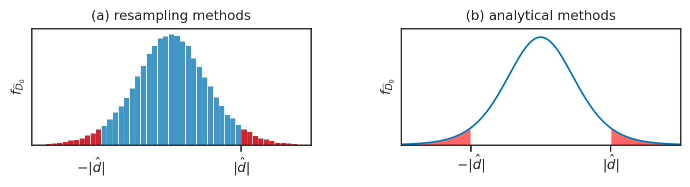
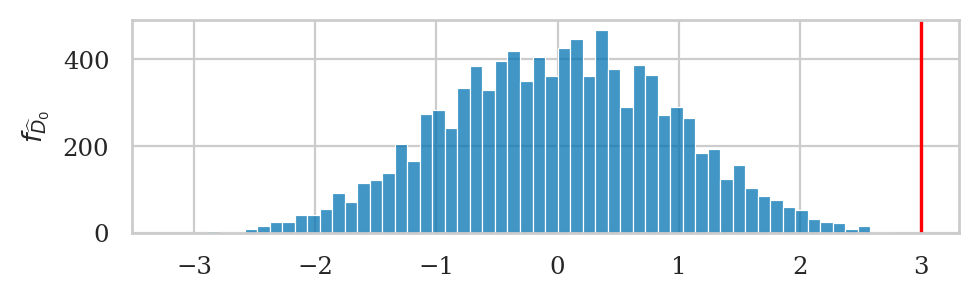
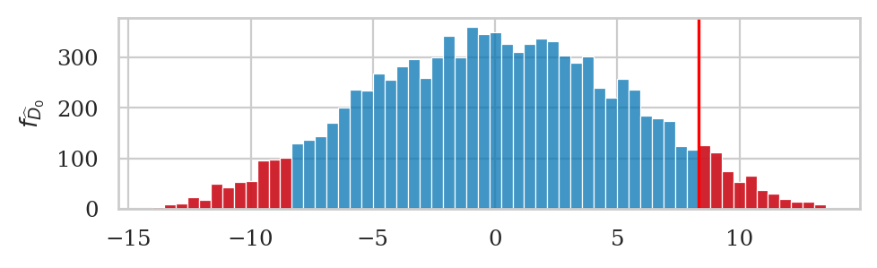
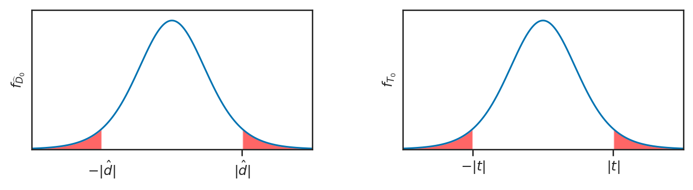
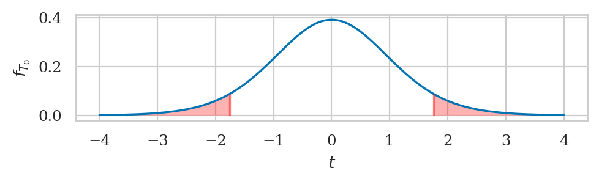

Section 3.4 — Two-sample hypothesis tests#
This notebook contains the code examples from Section 3.4 Two-sample hypothesis tests of the No Bullshit Guide to Statistics.
Notebook setup#
# load Python modules
import os
import numpy as np
import pandas as pd
import seaborn as sns
import matplotlib.pyplot as plt
# Plot helper functions
from plot_helpers import nicebins
from plot_helpers import plot_pdf
from plot_helpers import savefigure
# Stats helper functions
from stats_helpers import tailvalues
from stats_helpers import tailprobs
# Figures setup
plt.clf() # needed otherwise `sns.set_theme` doesn't work
from plot_helpers import RCPARAMS
# RCPARAMS.update({'figure.figsize': (10, 3)}) # good for screen
RCPARAMS.update({'figure.figsize': (5, 1.6)}) # good for print
sns.set_theme(
context="paper",
style="whitegrid",
palette="colorblind",
rc=RCPARAMS,
)
# Useful colors
snspal = sns.color_palette()
blue, orange, purple = snspal[0], snspal[1], snspal[4]
# red = sns.color_palette("tab10")[3]
# High-resolution please
%config InlineBackend.figure_format = 'retina'
# Where to store figures
DESTDIR = "figures/stats/two_sample_tests"
<Figure size 640x480 with 0 Axes>
# set random seed for repeatability
np.random.seed(42)
\(\def\stderr#1{\mathbf{se}_{#1}}\) \(\def\stderrhat#1{\hat{\mathbf{se}}_{#1}}\) \(\newcommand{\Mean}{\textbf{Mean}}\) \(\newcommand{\Var}{\textbf{Var}}\) \(\newcommand{\Std}{\textbf{Std}}\) \(\newcommand{\Freq}{\textbf{Freq}}\) \(\newcommand{\RelFreq}{\textbf{RelFreq}}\) \(\newcommand{\DMeans}{\textbf{DMeans}}\) \(\newcommand{\Prop}{\textbf{Prop}}\) \(\newcommand{\DProps}{\textbf{DProps}}\)
(this cell contains the macro definitions like \(\stderr{\overline{\mathbf{x}}}\), \(\stderrhat{}\), \(\Mean\), …)
Definitions#
Populations. We’ll label the two unknown populations \(X\) and \(Y\). and assume the arbitrary model family \(\mathcal{M}\) with mean parameter \(X \sim \mathcal{M}(\mu_X)\) and \(Y \sim \mathcal{M}(\mu_Y)\).
Parameters. The means of the two populations \(\mu_X\) and \(\mu_Y\) are unknown, and what we want to study…
Samples. We assume the two samples \(\mathbf{x} = (x_1, x_2, \ldots, x_n)\) and \(\mathbf{y} = (y_1, y_2, \ldots, y_m)\) are randomly selected from the populations \(X\) and \(Y\).
Estimate (statistic) \(\hat{d} = \overline{\mathbf{x}} - \overline{\mathbf{y}}\): the difference between means of the two samples \(\mathbf{x}\) and \(\mathbf{y}\).
Estimator \(\DMeans\): the function that computes the difference between means from two samples, \(\hat{d} = \DMeans(\mathbf{x},\mathbf{y}) = \overline{\mathbf{x}} - \overline{\mathbf{y}}\). the function we use to compute the estimate \(\hat{d}\).
Sampling distribution \(\hat{D} = \DMeans(\mathbf{X}, \mathbf{Y})\): the difference between means computed from two random samples \(\mathbf{X}\) and \(\mathbf{Y}\).
def mean(sample):
return sum(sample) / len(sample)
def var(sample):
xbar = mean(sample)
sumsqdevs = sum([(xi-xbar)**2 for xi in sample])
return sumsqdevs / (len(sample)-1)
def std(sample):
s2 = var(sample)
return np.sqrt(s2)
def dmeans(xsample, ysample):
dhat = mean(xsample) - mean(ysample)
return dhat
Comparing two groups#
Description of the problem: compare two group based on sample means computed from each group.
Computing \(p\)-values#
filename = os.path.join(DESTDIR, "panel_D0_hist_and_dist_twosided_pvalues.pdf")
from scipy.stats import t as tdist
rvT = tdist(9)
xs = np.linspace(-4, 4, 1000)
ys = rvT.pdf(xs)
N = 100000
np.random.seed(42)
ts = rvT.rvs(N)
bins = nicebins(xs, 2, nbins=50)
with plt.rc_context({"figure.figsize":(7,2)}), sns.axes_style("ticks"):
fig, (ax1, ax2) = plt.subplots(1,2)
# D0 hist
sns.histplot(ts, ax=ax1, bins=bins)
ax1.set_title("(a) resampling methods")
ax1.set_xlim(-4, 4)
ax1.set_xticks([2])
ax1.set_xticklabels([])
ax1.set_yticks([])
ax1.set_ylabel("$f_{\widehat{D}_0}$")
# highlight the left and right tails
tailvaluesl = [t for t in ts if t <= -2]
sns.histplot(tailvaluesl, bins=bins, ax=ax1, color="red")
ax1.text(-2.3, -630, "$-|\hat{d}|$", verticalalignment="top", horizontalalignment="center")
tailvaluesr = [t for t in ts if t >= 2]
sns.histplot(tailvaluesr, bins=bins, ax=ax1, color="red")
ax1.text(2, -630, "$|\hat{d}|$", verticalalignment="top", horizontalalignment="center")
# ax1.axvline(2, color="red")
# D0 dist
sns.lineplot(x=xs, y=ys, ax=ax2)
ax2.set_title("(b) analytical methods")
ax2.set_xlim(-4, 4)
ax2.set_ylim(0, 0.42)
ax2.set_xticks([-2,2])
ax2.set_xticklabels([])
ax2.set_yticks([])
ax2.set_ylabel("$f_{\widehat{D}_0}$")
# highlight the left and right tails
mask = (xs < -2)
ax2.fill_between(xs[mask], y1=ys[mask], alpha=0.6, facecolor="red")
ax2.text(-2, -0.03, r"$-|\hat{d}|$", verticalalignment="top", horizontalalignment="center")
mask = (xs > 2)
ax2.fill_between(xs[mask], y1=ys[mask], alpha=0.6, facecolor="red")
ax2.text(2, -0.03, r"$|\hat{d}|$", verticalalignment="top", horizontalalignment="center")
savefigure(fig, filename, tight_layout_kwargs={"w_pad":5})
Saved figure to figures/stats/two_sample_tests/panel_D0_hist_and_dist_twosided_pvalues.pdf
Saved figure to figures/stats/two_sample_tests/panel_D0_hist_and_dist_twosided_pvalues.png

Permutation test for comparing two populations#
The permutations test is a computational approach for comparing two group. The permutation test takes it’s name from the action of mixing up the group-membership labels and computing a statistic which is a way to generate samples from the null hypothesis in situations where the null hypothesis states there is no difference between two groups.
Permutations#
np.random.seed(43)
np.random.permutation([1,2,3,4,5,6,7])
array([4, 6, 3, 7, 2, 1, 5])
np.random.seed(45)
np.random.permutation([1,2,3,4,5,6,7])
array([6, 3, 2, 1, 5, 7, 4])
Resampling under the null hypothesis#
def resample_under_H0(xsample, ysample):
"""
Generate new samples from a random permutation of
the values in the samples `xsample` and `xsample`.
"""
values = np.concatenate((xsample, ysample))
pvalues = np.random.permutation(values)
pxsample = pvalues[0:len(xsample)]
pysample = pvalues[len(xsample):]
return pxsample, pysample
# example 1
np.random.seed(43)
resample_under_H0([1,2,3], [4,5,6,7])
(array([4, 6, 3]), array([7, 2, 1, 5]))
# example 2
np.random.seed(45)
resample_under_H0([1,2,3], [4,5,6,7])
(array([6, 3, 2]), array([1, 5, 7, 4]))
The function resample_under_H0 gives us a way to generate samples from the null hypothesis.
We can then compute the value of the dmeans statistic for these samples. We used the assumption of “no difference” under the null hypothesis, and translated this to the “forget the labels” interpretation.
Example 5: electricity prices#
The probability model under the alternative hypothesis describes two populations with different parameters: $\( H_A: \qquad X_W = \mathcal{N}(\color{blue}{\mu_W}, \sigma_W) \quad \textrm{and} \quad X_{E} = \mathcal{N}(\color{orange}{\mu_{E}}, \sigma_{E}) \)$
Under the null hypothesis the populations have the same mean: $\( H_0: \qquad X_W = \mathcal{N}(\color{red}{\mu_0}, \sigma_W) \quad \textrm{and} \quad X_{E} = \mathcal{N}(\color{red}{\mu_0}, \sigma_{E}) \)$
eprices = pd.read_csv("../datasets/eprices.csv")
# eprices
eprices.groupby("end")["price"].describe()
| count | mean | std | min | 25% | 50% | 75% | max | |
|---|---|---|---|---|---|---|---|---|
| end | ||||||||
| East | 9.0 | 6.155556 | 0.877655 | 4.8 | 5.5 | 6.3 | 6.5 | 7.7 |
| West | 9.0 | 9.155556 | 1.562139 | 6.8 | 8.3 | 8.6 | 10.0 | 11.8 |
pricesW = eprices[eprices["end"]=="West"]["price"]
pricesE = eprices[eprices["end"]=="East"]["price"]
# 1. Calculate the observed difference between means
dprice = dmeans(pricesW, pricesE)
dprice
3.0
Our goal is to determine how likely or unlikely the observed value \(\hat{d}=3\) is under the null hypothesis \(H_0\). This means we need to obtain the sampling distribution of \(\hat{D}\) under \(H_0\), which we can do using the permutation test.
Let’s look at some of the differences we can expect to observe under \(H_0\).
#######################################################
np.random.seed(31)
# generate new samples by shuffling the labels
ppricesW, ppricesE = resample_under_H0(pricesW, pricesE)
# Compute the difference in means for the bootstrap samples
pdhat0 = dmeans(ppricesW, ppricesE)
pdhat0
1.6444444444444475
Running a permutation test#
We can repeat the resampling procedure 10000 times to get the sampling distribution of \(\widehat{D}_0\) under \(H_0\),
as illustrated in the code procedure below.
np.random.seed(42)
# 2. Obtain the sampling distribution under H0
P = 10000
pdhats0 = []
for i in range(0, P):
ps1, ps2 = resample_under_H0(pricesW, pricesE)
pdhat0 = dmeans(ps1, ps2)
pdhats0.append(pdhat0)
Now that we have the sampling distribution \(\widehat{D}_0\),
we can see where the observed value \(\hat{d}= 3\) =dprice falls within this distribution.
The \(p\)-value is the probability of observing value dprice=3 or more extreme under the null hypothesis.
# 3. Compute the p-value
tails = tailvalues(pdhats0, dprice)
pvalue = len(tails) / len(pdhats0)
pvalue
0.0002
filename = os.path.join(DESTDIR, "hist_p-value_dmeans_eprices.pdf")
# plot the sampling distribution in blue
bins = nicebins(pdhats0, dprice)
ax = sns.histplot(pdhats0, bins=bins)
# plot red line for the observed statistic
plt.axvline(dprice, color="red")
# plot the values that are equal or more extreme in red
sns.histplot(tails, ax=ax, bins=bins, color="red")
ax.set_ylabel("$f_{\widehat{D}_0}$")
savefigure(ax, filename)
Saved figure to figures/stats/two_sample_tests/hist_p-value_dmeans_eprices.pdf
Saved figure to figures/stats/two_sample_tests/hist_p-value_dmeans_eprices.png

Effect size estimates#
dprice = dmeans(pricesW, pricesE)
dprice
3.0
The bootstrap confidence interval for the effect size \(\ci{\Delta,0.9}^*\) tells us a range of plausible values for the effect size.
from stats_helpers import ci_dmeans
np.random.seed(45)
ci_dmeans(pricesW, pricesE, alpha=0.1, method="b")
[2.0777777777777775, 3.9555555555555557]
The 90% confidence interval \(\ci{\Delta,0.9}^* = [2.08, 3.96]\) describes an interval of numbers that should contain the difference between group means \(\Delta\) at least 90% of the time:
Reusable function#
def permutation_test_dmeans(xsample, ysample, P=10000):
# 1. Compute the observed difference between means
obsdhat = dmeans(xsample, ysample)
# 2. Get sampling dist. of `dmeans` under H0
pdhats0 = []
for i in range(0, P):
psx, psy = resample_under_H0(xsample, ysample)
pdhat0 = dmeans(psx, psy)
pdhats0.append(pdhat0)
# 3. Compute the p-value
tails = tailvalues(pdhats0, obsdhat)
pvalue = len(tails) / len(pdhats0)
return pvalue
np.random.seed(42)
permutation_test_dmeans(pricesW, pricesE)
0.0002
Using existing SciPy functions (optional)#
Permutations test using ttest_ind#
You can use the SciPy implementation of permutation test,
by calling ttest_ind(..., permutations=10000) to perform a permutation test, then obtain the \(p\)-value.
from scipy.stats import ttest_ind
np.random.seed(42)
ttest_ind(pricesW, pricesE, permutations=10000).pvalue
0.00029997000299970003
Note the \(p\)-value we obtained form the two methods may be different. This can happen when using the permutations test, because we use randomness as part of the calculation.
Example 6: lecture and debate curriculums#
students = pd.read_csv("../datasets/students.csv")
# students
students.groupby("curriculum")["score"].describe()
| count | mean | std | min | 25% | 50% | 75% | max | |
|---|---|---|---|---|---|---|---|---|
| curriculum | ||||||||
| debate | 8.0 | 76.462500 | 10.519633 | 62.9 | 69.55 | 75.55 | 80.925 | 96.2 |
| lecture | 7.0 | 68.142857 | 7.758406 | 57.0 | 63.30 | 70.30 | 73.850 | 75.4 |
studentsD = students[students["curriculum"]=="debate"]
studentsL = students[students["curriculum"]=="lecture"]
scoresD = studentsD["score"]
scoresL = studentsL["score"]
# observed difference between score means
dscore = dmeans(scoresD, scoresL)
dscore
8.319642857142853
Our goal is to determine how likely or unlikely this observed value \(\hat{d}_s=8.32\) is under the null hypothesis \(H_0\). This means we need to obtain the sampling distribution of \(\hat{D}_0\) under \(H_0\), which we can do using the permutation test.
np.random.seed(43)
pvalue = permutation_test_dmeans(scoresD, scoresL)
pvalue
0.1118
# FIGURES ONLY
filename = os.path.join(DESTDIR, "hist_p-value_dmeans_students.pdf")
# generate sampling distribution under H0
np.random.seed(43)
pdhats = []
P = 10000
for i in range(0, P):
rs1, rs2 = resample_under_H0(scoresD, scoresL)
pdhat = dmeans(rs1, rs2)
pdhats.append(pdhat)
# plot the sampling distribution in blue
bins = nicebins(pdhats, dscore)
ax = sns.histplot(pdhats, bins=bins)
# plot red line for the observed statistic
plt.axvline(dscore, color="red")
# plot the values that are equal or more extreme in red
tails = tailvalues(pdhats, dscore)
# print( len(tails) / len(pdhats) )
sns.histplot(tails, bins=bins, ax=ax, color="red")
ax.set_ylabel("$f_{\widehat{D}_0}$")
savefigure(ax, filename)
Saved figure to figures/stats/two_sample_tests/hist_p-value_dmeans_students.pdf
Saved figure to figures/stats/two_sample_tests/hist_p-value_dmeans_students.png

Analytical approximation for comparing two groups#
We’ll now look at another approach for answering Question 1: using and analytical approximation, which is the way normally taught in STATS 101 courses. How likely or unlikely is the observed difference \(d=130\) under the null hypothesis?
Analytical approximations are math models for describing the sampling distribution under \(H_0\)
Real sampling distributions: obtained by repeated sampling from \(H_0\)
Analytical approximation: probability model based on estimated parameters
Based on this assumption we can use the theoretical model for the difference between group means that we developed earlier, we can obtain a closed form expression for the sampling distribution of \(D\).
In particular, the probability model for the two groups under \(H_0\) are:
\[ H_0: \qquad X = \mathcal{N}(\color{red}{\mu_0}, \sigma_X) \quad \textrm{and} \quad Y = \mathcal{N}(\color{red}{\mu_0}, \sigma_Y), \quad \]from which we can derive the model for \(D = \overline{\mathbf{X}} - \overline{\mathbf{Y}}\):
\[ D \sim \mathcal{N}\!\left( \color{red}{0}, \ \sqrt{ \tfrac{\sigma^2_X}{n} + \tfrac{\sigma^2_Y}{m} } \right) \]
TODO finish importing S and NS narrative (commented out in this cell)
filename = os.path.join(DESTDIR, "panel_D0_and_T0_twosided_pvalues.pdf")
from scipy.stats import t as tdist
rvT = tdist(9)
xs = np.linspace(-4, 4, 1000)
ys = rvT.pdf(xs)
with plt.rc_context({"figure.figsize":(7,2)}), sns.axes_style("ticks"):
fig, (ax1, ax2) = plt.subplots(1,2)
# D0
sns.lineplot(x=xs, y=ys, ax=ax1)
ax1.set_xlim(-4, 4)
ax1.set_ylim(0, 0.42)
ax1.set_xticks([2])
ax1.set_xticklabels([])
ax1.set_yticks([])
ax1.set_ylabel("$f_{\widehat{D}_0}$")
# highlight the left and right tails
mask = (xs < -2)
ax1.fill_between(xs[mask], y1=ys[mask], alpha=0.6, facecolor="red")
ax1.text(-2, -0.03, r"$-|\hat{d}|$", verticalalignment="top", horizontalalignment="center")
mask = (xs > 2)
ax1.fill_between(xs[mask], y1=ys[mask], alpha=0.6, facecolor="red")
ax1.text(2, -0.03, r"$|\hat{d}|$", verticalalignment="top", horizontalalignment="center")
# T0
sns.lineplot(x=xs, y=ys, ax=ax2)
ax2.set_xlim(-4, 4)
ax2.set_ylim(0, 0.42)
ax2.set_xticks([-2,2])
ax2.set_xticklabels([])
ax2.set_yticks([])
ax2.set_ylabel("$f_{T_0}$")
# highlight the left and right tails
mask = (xs < -2)
ax2.fill_between(xs[mask], y1=ys[mask], alpha=0.6, facecolor="red")
ax2.text(-2, -0.03, r"$-|t|$", verticalalignment="top", horizontalalignment="center")
mask = (xs > 2)
ax2.fill_between(xs[mask], y1=ys[mask], alpha=0.6, facecolor="red")
ax2.text(2, -0.03, r"$|t|$", verticalalignment="top", horizontalalignment="center")
savefigure(fig, filename, tight_layout_kwargs={"w_pad":5})
Saved figure to figures/stats/two_sample_tests/panel_D0_and_T0_twosided_pvalues.pdf
Saved figure to figures/stats/two_sample_tests/panel_D0_and_T0_twosided_pvalues.png

Example 5T: comparing East and West electricity prices#
eprices = pd.read_csv("../datasets/eprices.csv")
pricesW = eprices[eprices["end"]=="West"]["price"]
pricesE = eprices[eprices["end"]=="East"]["price"]
# Calculate the observed difference between means
dprice = dmeans(pricesW, pricesE)
dprice
3.0
Welch’s t-test (unpooled variances)#
We’ll now show the \(t\)-test procedure known as Welch’s t-test, which allows the variances in the two groups to be different.
We’ll talk about the \(t\)-test with pooled variances later on.
Welch’s \(t\)-test differs only in steps 4 through 6 as shown below:
# Calculate the sample size and the standard deviation for each group
nW, nE = len(pricesW), len(pricesE)
stdW, stdE = std(pricesW), std(pricesE)
# Compute the standard error of the estimator D (Welch's t-test)
seD = np.sqrt(stdW**2/nW + stdE**2/nE)
seD
0.5972674401486561
# Compute the value of the t-statistic
obst = (dprice - 0) / seD
obst
5.022875513276463
from stats_helpers import calcdf
# Obtain the degrees of freedom from the crazy formula
df = calcdf(stdW, nW, stdE, nE)
df
12.59281702723103
from stats_helpers import tailprobs
# Calculate the p-value
from scipy.stats import t as tdist
rvT0 = tdist(df)
pvalue = tailprobs(rvT0, obst, alt="two-sided")
pvalue
0.0002570338337217614
# # SKIP BECAUSE TOO SMALL
# filename = os.path.join(DESTDIR, "rvT0_p-value_dmeans_eprices.pdf")
# from plot_helpers import calc_prob_and_plot_tails
# _, ax = calc_prob_and_plot_tails(rvT0, -obst, obst, xlims=[-4,4])
# ax.set_title(None)
# ax.set_xlabel("$t$")
# ax.set_ylabel("$f_{T_0}$")
# savefigure(ax, filename)
T-test with pooled variances#
# Compute the pooled variance and standard error of estimator D
varp = ((nW-1)*stdW**2 + (nE-1)*stdE**2) / (nW + nE - 2)
stdp = np.sqrt(varp)
seDp = stdp * np.sqrt(1/nW + 1/nE)
seDp
0.5972674401486561
# Compute the value of the t-statistic
obstp = (dprice - 0) / seDp
obstp
5.022875513276463
# Obtain the degrees of freedom
dfp = nW + nW - 2
dfp
16
from scipy.stats import t as tdist
from stats_helpers import tailprobs
# Calculate the p-value
rvT0p = tdist(dfp)
pvaluep = tailprobs(rvT0p, obstp, alt="two-sided")
pvaluep
0.0001249706798767125
Effect size estimates#
dprice = dmeans(pricesW, pricesE)
dprice
3.0
The confidence interval for the effect size \(\ci{\Delta,0.9}\) tells us a range of plausible values for the effect size.
from stats_helpers import ci_dmeans
ci_dmeans(pricesW, pricesE, alpha=0.1, method="a")
[1.9396575883681466, 4.060342411631854]
The 90% confidence interval \(\ci{\Delta,0.9} = [1.94, 4.06]\) describes an interval of numbers that should contain the difference between group means \(\Delta\) at least 90% of the time:
Reusable procedure for two-sample \(t\)-test#
#######################################################
def ttest_dmeans(xsample, ysample, equal_var=False):
# Calculate the observed difference between means
obsdhat = mean(xsample) - mean(ysample)
# Calculate the sample sizes and the stds
n, m = len(xsample), len(ysample)
sx, sy = std(xsample), std(ysample)
# Calculate the standard error, the degrees of
# freedom, the null model, and the t-statistic
if not equal_var: # Welch's t-test (default)
seD = np.sqrt(sx**2/n + sy**2/m)
obst = (obsdhat - 0) / seD
df = calcdf(sx, n, sy, m)
rvT0 = tdist(df)
else: # Use pooled variance
varp = ((n-1)*sx**2 + (m-1)*sy**2) / (n+m-2)
stdp = np.sqrt(varp)
seDp = stdp * np.sqrt(1/n + 1/m)
obst = (obsdhat - 0) / seDp
dfp = n + m - 2
rvT0 = tdist(dfp)
# Calculate the p-value from the t-distribution
pvalue = tailprobs(rvT0, obst, alt="two-sided")
return pvalue
Verify we get the same \(p\)-value when using the standard error formula.
ttest_dmeans(pricesW, pricesE)
0.0002570338337217614
Verify we get the same \(p\)-value when using the pooled variance formula.
ttest_dmeans(pricesW, pricesE, equal_var=True)
0.0001249706798767125
Alternatively,
we can use scipy.stats.ttest_ind to obtain the \(p\)-value.
Use equal_var=False to obtain the Welsh value.
# ALT. compute using existing function in `scipy.stats`
from scipy.stats import ttest_ind
result = ttest_ind(pricesW, pricesE, equal_var=False)
result.pvalue
0.0002570338337217609
Use equal_var=True to obtain the pooled variance value.
# ALT. compute using existing function in `scipy.stats`
from scipy.stats import ttest_ind
resultp = ttest_ind(pricesW, pricesE, equal_var=True)
resultp.pvalue
0.00012497067987678488
Example 6T: comparing rural and urban sleep scores#
students = pd.read_csv("../datasets/students.csv")
# students
# students.groupby("curriculum")["score"].describe()
scoresD = students[students["curriculum"]=="debate"]["score"]
scoresL = students[students["curriculum"]=="lecture"]["score"]
# observed difference between score means
dscores = dmeans(scoresD, scoresL)
dscores
8.319642857142853
ttest_dmeans(scoresD, scoresL)
0.10307495448387442
# FIGURES ONLY
filename = os.path.join(DESTDIR, "rvT0_p-value_dmeans_student_scores.pdf")
# T-TEST ANALYSIS
nD, nL = len(scoresD), len(scoresL)
stdD, stdL = std(scoresD), std(scoresL)
seDDL = np.sqrt(stdD**2/nD + stdL**2/nL)
obstDL = (dscores - 0) / seDDL
from stats_helpers import calcdf
dfDL = calcdf(stdD, nD, stdL, nL)
rvT0DL = tdist(dfDL)
pvalueDL = tailprobs(rvT0DL, obstDL, alt="two-sided")
print(pvalueDL)
from plot_helpers import calc_prob_and_plot_tails
_, ax = calc_prob_and_plot_tails(rvT0DL, -obstDL, obstDL, xlims=[-4,4])
ax.set_title(None)
ax.set_xlabel("$t$")
ax.set_ylabel("$f_{T_0}$")
savefigure(ax, filename)
0.10307495448387442
Saved figure to figures/stats/two_sample_tests/rvT0_p-value_dmeans_student_scores.pdf
Saved figure to figures/stats/two_sample_tests/rvT0_p-value_dmeans_student_scores.png

Explanations#
Two-sided tests#
Statistical modelling assumptions#
LARGEn:
NORMAL:
EQVAR:
Standardized effect size#
It is sometimes useful to report the effect size using a “standardized” measure for effect sizes.
Cohen’s \(d\) is one such measure, and it is defined as the difference between two means divided by the pooled standard deviation.
def cohend2(sample1, sample2):
"""
Cohen's d measure of effect size for two independent samples.
"""
n1, n2 = len(sample1), len(sample2)
mean1, mean2 = mean(sample1), mean(sample2)
var1, var2 = var(sample1), var(sample2)
# calculate the pooled variance and std
var_pooled = ((n1-1)*var1+(n2-1)*var2) / (n1+n2-2)
std_pooled = np.sqrt(var_pooled)
cohend = (mean1 - mean2) / std_pooled
return cohend
We can interpret the value of Cohen’s d obtained using the reference table of values:
Cohen’s d |
Effect size |
|---|---|
0.01 |
very small |
0.20 |
small |
0.50 |
medium |
0.80 |
large |
Effect size for mean deviation of kombucha Batch 04 from expected value \(\mu_K=1000\).
cohend2(pricesW, pricesE)
2.3678062243290983
# not relevant because p value was not significant
# cohend2(scoresD, scoresL)
Discussion#
Hypothesis testing using confidence intervals#
Comparison to resampling methods#
Other statistical methods#
Exercises#
E3.X Pooled variance#
Redo Example 6T but this time run the two-sample \(t\)-test with pooled variance.
students = pd.read_csv("../datasets/students.csv")
scoresD = students[students["curriculum"]=="debate"]["score"]
scoresL = students[students["curriculum"]=="lecture"]["score"]
ttest_dmeans(scoresD, scoresL, equal_var=True)
0.10917234443214374
Compute using existing function in scipy.stats.ttest_ind
from scipy.stats import ttest_ind
result = ttest_ind(scoresD, scoresL, equal_var=False)
result.pvalue
0.10307495448387395